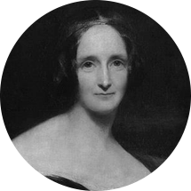

|
 Mary Shelley Until the 1970s, Shelley was known mainly for her efforts to publish her husband's works and for her novel Frankenstein, which remains widely read and has inspired many theatrical and film adaptations. Recent scholarship has yielded a more comprehensive view of Shelley's achievements.Scholars have shown increasing interest in her literary output, particularly in her novels. ). Studies of her lesser-known works, such as the travel book Rambles in Germany and Italy (1844) and the biographical articles for Dionysius Lardner's Cabinet Cyclopaedia (1829–1846), support the growing view that Shelley remained a political radical throughout her life. Shelley's works often argue that cooperation and sympathy, particularly as practised by women in the family, were the ways to reform civil society. This view was a direct challenge to the individualistic Romantic ethos promoted by Percy Shelley and the Enlightenment political theories articulated by her father, William Godwin. |
Comments / Suggestions We want to hear from you! If you have any comments or suggestions on things you'd like to see on the site please let us know. |
| © 2009 a classic horror authors website |